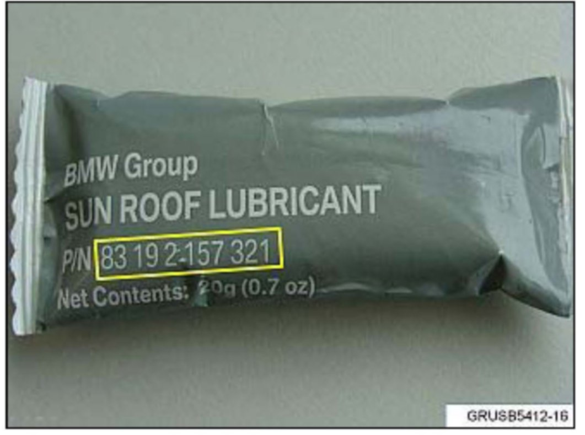

Body - Sunroof Channel Cleaning Kit
SI B54 02 12Special Tools
June 2012
Technical Service
SUBJECT
Sunroof Channel Cleaning Kit
MODEL
E53 (X5)
E70 (X5)
E83 (X3)
E61 (5 Series Sports Wagon)
E91 (3 Series Sports Wagon)
All production
SITUATION
Poor or noisy sunroof operation
CAUSE
As the vehicle ages, the grease in the sunroof channel starts to lose lubricating qualities. This is due to dirt and debris that is collecting on the grease and sunroof channels. This can result in poor sunroof operation.
PROCEDURE
Each time a sunroof repair is made, check the condition of the grease. If needed, clean the contaminated grease from the sunroof channels, and then apply the special grease.
Note:
A sunroof channel cleaning kit is available to aid in cleaning and greasing the sunroof channel.
1. The sunroof cleaning kit contains one white nylon tool (shaped to fit the sunroof channel) and one microfiber cleaning rag.
2. For illustration purposes, the picture shows the proper insertion into the track. However, you must lay the rag over the track first. Then insert the nylon tool into the channel at an angle, and then turn to engage the tool into the track.
3. Run the tool with the rag up and down the track several times to loosen and remove the contaminated grease. Remove the tool and use the rag to remove the remaining grease from the channel.

4. Specific grease is used to lubricate the sunroof channels once they are cleaned.
5. Clean the nylon tool and insert into the middle of the track. Apply a small amount of grease to the inner sides of the track, and on both the front and back sides of the nylon tool. Run the tool up and down in the track several times to spread the grease evenly. Continue to add grease until the track is fully coated.
Operate the sunroof several times to help distribute the grease, and check for smooth operation.
PARTS INFORMATION
WARRANTY INFORMATION
Not applicable.